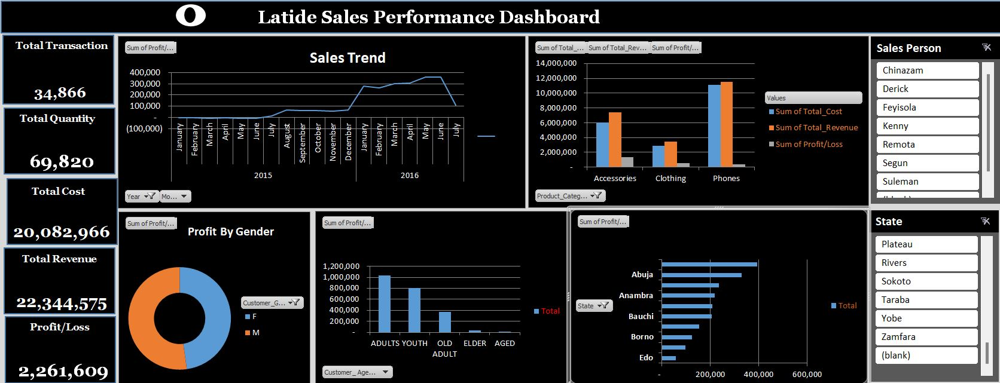

Latide Sales Performance Dashboard
OBJECTIVES AND BUSINESS PROBLEM
This project involved the design and analysis of the Latide Sales Performance Dashboard using Microsoft Excel. The objective was to gain actionable insights into sales performance across various dimensions such as time, product categories, customer demographics, and geographical regions. The tools utilized include Excel's data visualization features, pivot tables, and slicers to dynamically filter and analyze the data. Latide faced challenges in understanding the profitability of different product categories, customer segments, and regional sales performance. The company needed a comprehensive dashboard that could track sales trends, measure profitability, and identify underperforming areas to drive strategic decision-making.
INSIGHTS AND FINDINGS
An in-depth analysis of the dashboard reveals the following critical insights:- Sales Trends: The sales trend analysis reveals fluctuating performance over the year, with a significant peak in June, followed by a decline in July. This pattern suggests seasonality or a successful promotional campaign in the middle of the year.
- Product Category Performance: Among the product categories, 'Phones' contributed the most to total revenue, significantly outpacing 'Clothing' and 'Accessories.' However, it also had the highest costs, indicating a potential area to optimize cost efficiency.
- Profit by Customer Gender: The analysis of profit by gender shows that sales to male customers generated more profit than sales to female customers. This could imply a need for targeted marketing strategies to balance the gender-based customer engagement.
- Customer Age Group Profitability: The 'Youth' segment was the most profitable, contributing significantly more to the total profit compared to other age groups. This insight highlights the importance of tailoring products and services to younger customers.
- Regional Sales Performance: Abuja emerged as the leading state in terms of total profit, followed by Rivers and Anambra. This geographic insight suggests focusing marketing efforts and resources on these high-performing regions.
RECOMMENDATIONS
Based on the insights gathered, the following strategic recommendations are proposed:- Cost Optimization: Explore opportunities to reduce the costs associated with the 'Phones' category without compromising on quality, as it is a major revenue driver.
- Targeted Marketing: Increase marketing efforts towards the female demographic to boost sales and profitability in this segment. Additionally, continue to focus on the 'Youth' segment, which has shown the highest profitability.
- Regional Focus: Allocate more resources and marketing initiatives to the top-performing states such as Abuja, Rivers, and Anambra to capitalize on their higher profit margins. Consider developing localized strategies for underperforming regions to enhance overall profitability.
- Seasonality Strategy: Investigate the reasons behind the sales peak in June and implement similar strategies in other months to stabilize revenue throughout the year.
By employing these insights and recommendations, Latide can better align its sales strategies with market demands, optimize costs, and enhance overall profitability. This dashboard serves as a crucial tool in guiding the company’s strategic decisions, ensuring data-driven success.